just us,
being us.
kumpulan foto kecil dari hari-hari yang mungkin sederhana, tapi jadi lebih berharga karena pernah dijalanin bareng.
some moments are ordinary until they become memories.
our random little moments ♡
foto random, foto bagus, foto aneh, semuanya masuk sini hehe
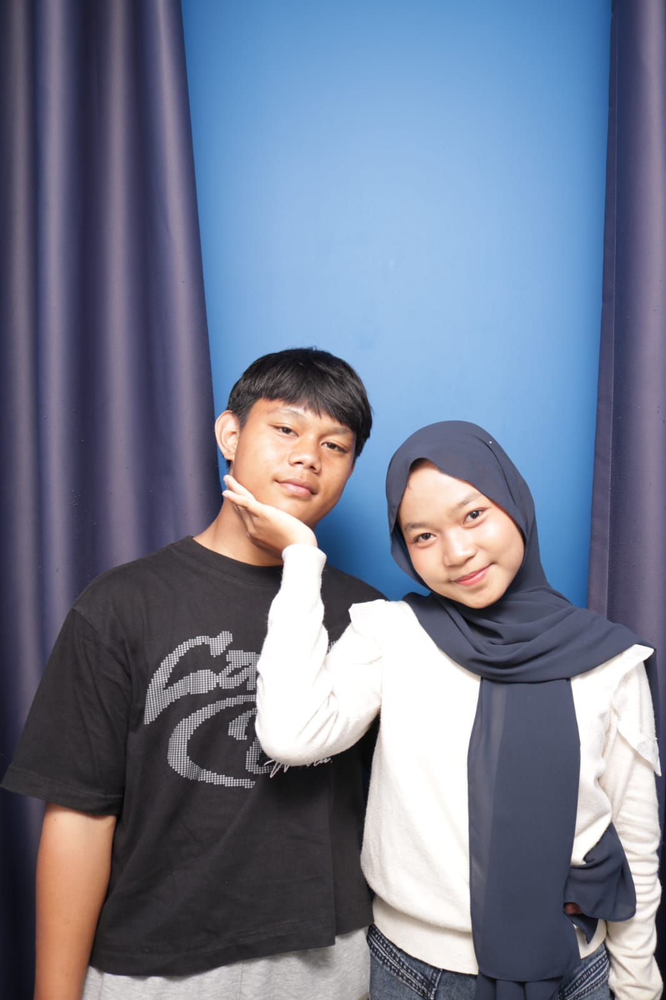
one of my favorites ♡

just a little moment
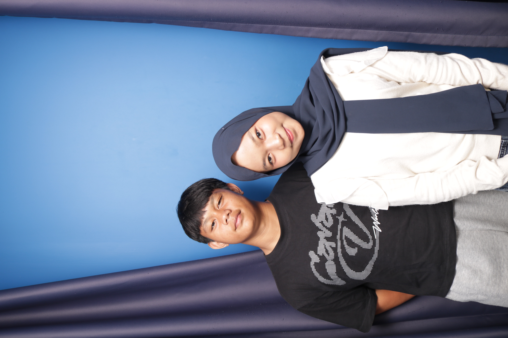
hehe, us again ✦
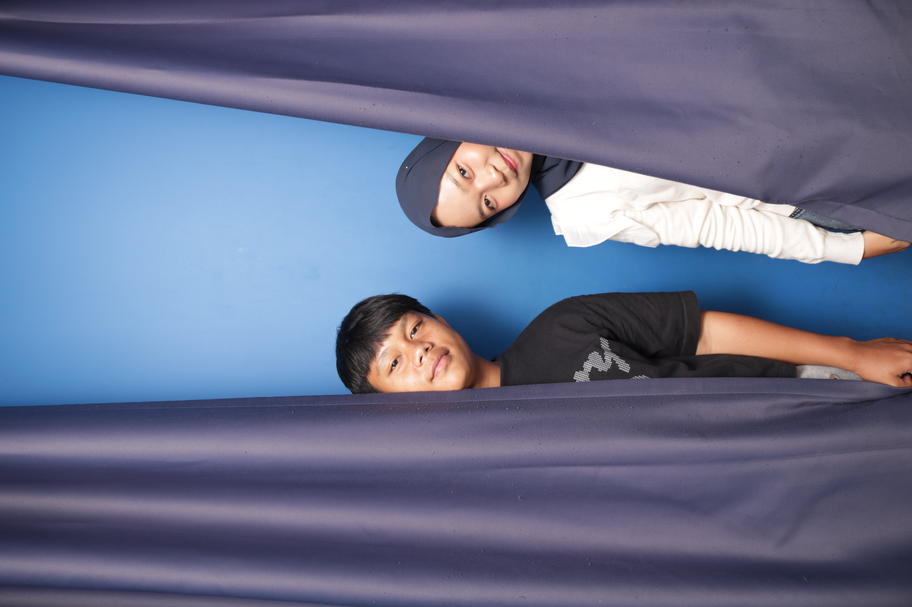
keep this one ♡
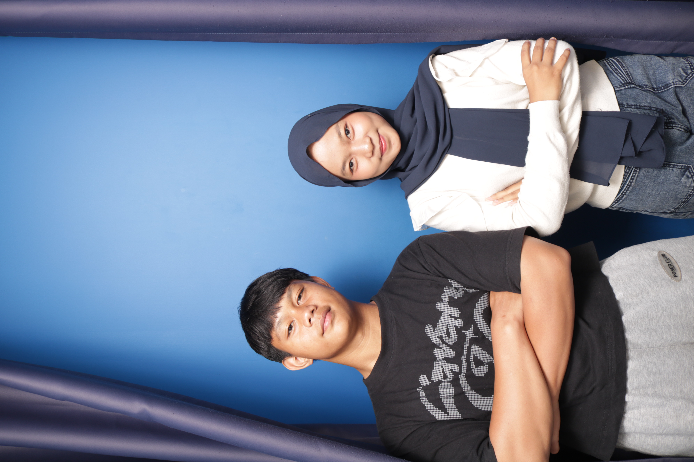
happy little archive
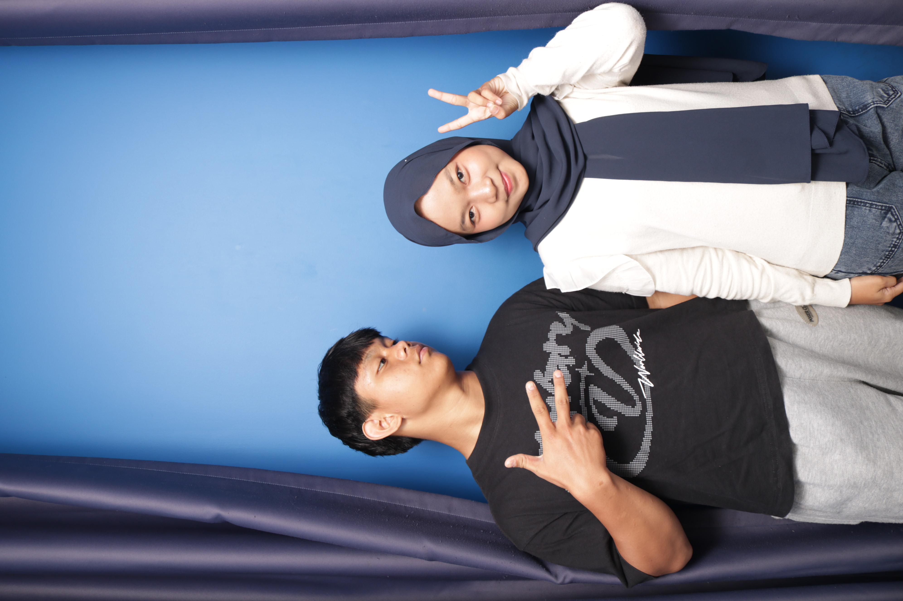
another day with you
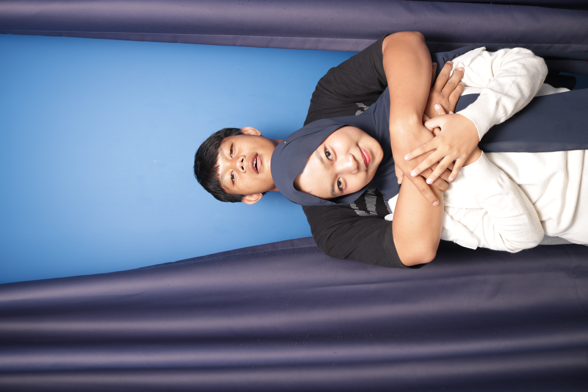
random but precious
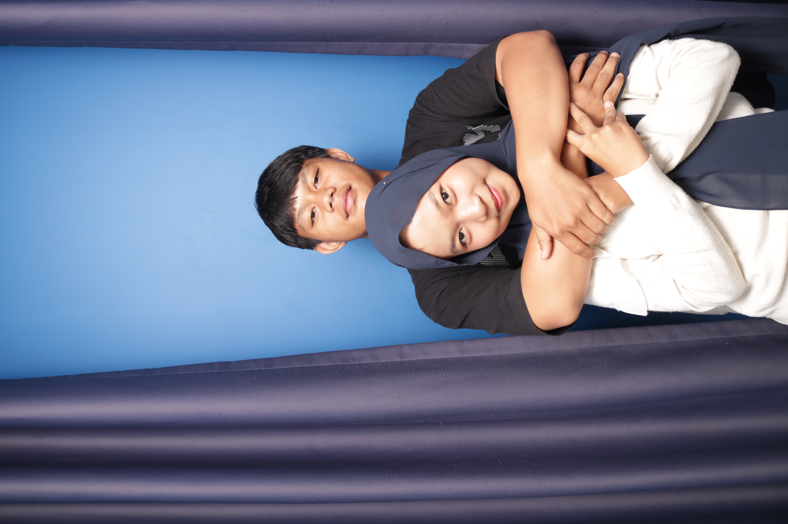
this belongs here ♡

small moment, big smile
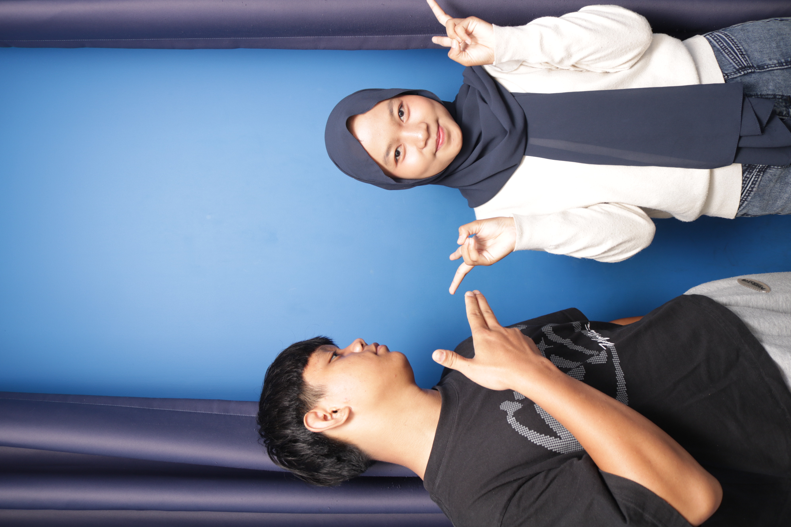
my favorite kind of ordinary
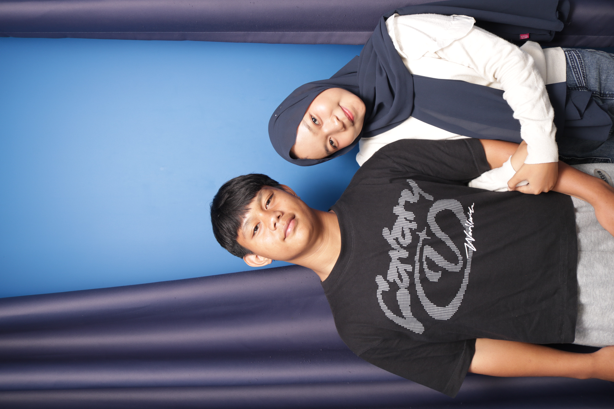
♡ ♡ ♡
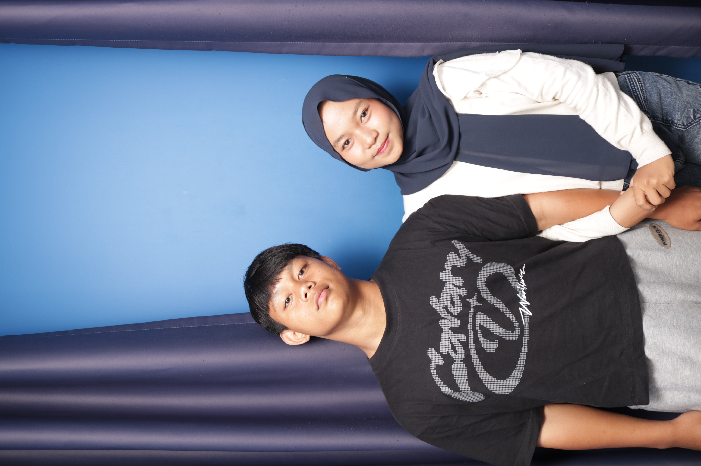
saved in my heart
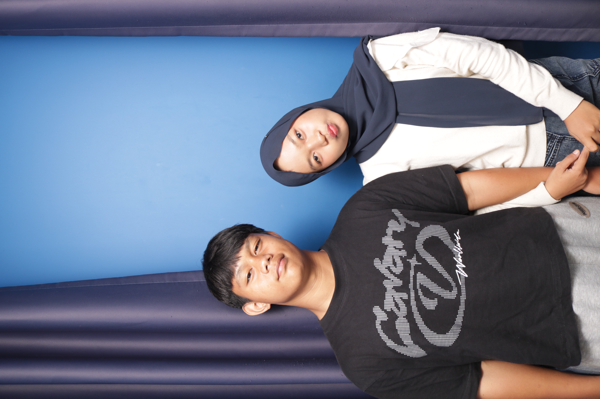
another little chapter
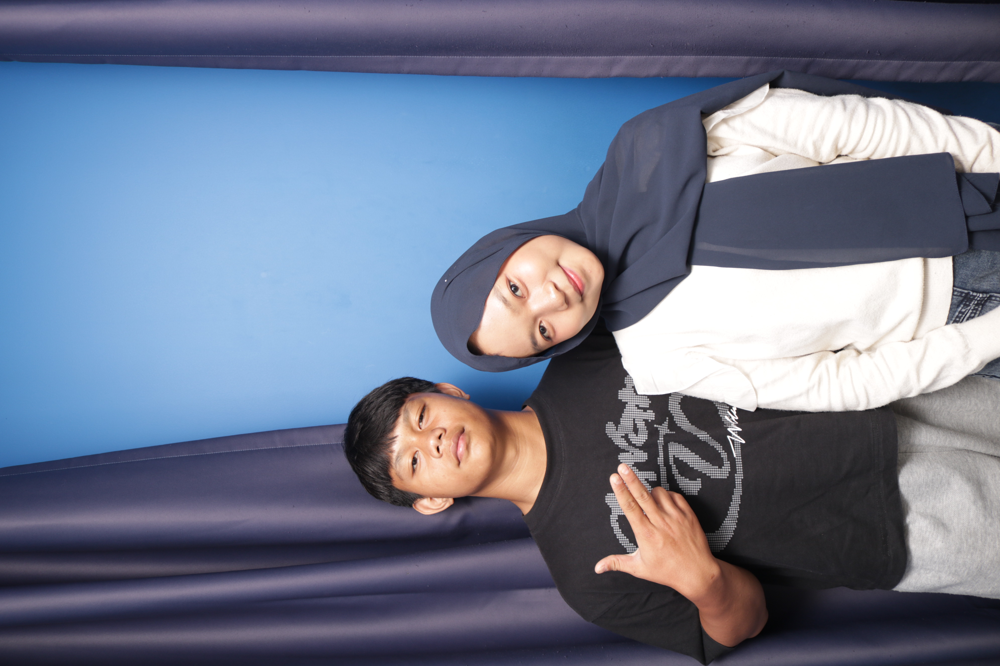
us, as always ✦
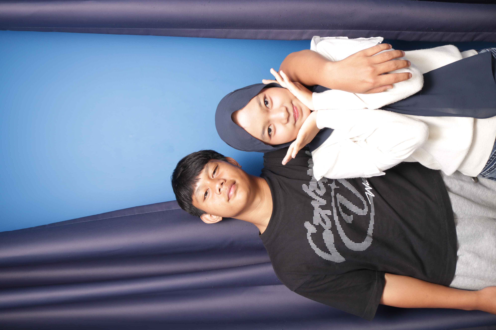
i like this memory
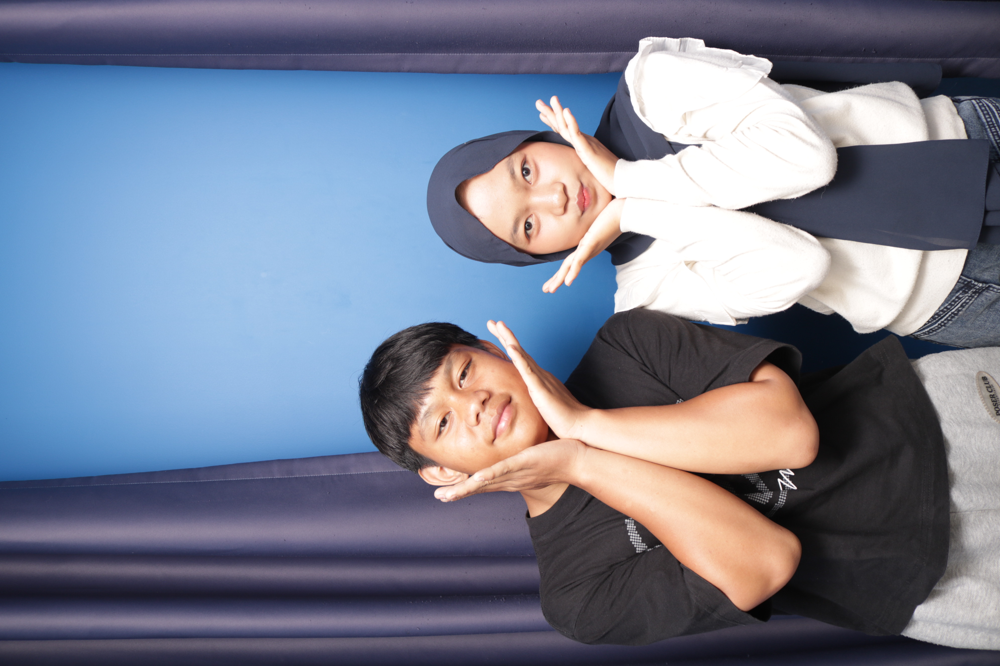
one for the archive ♡
tap a photo to see it bigger ✦
things i want to remember ♡
the little things
cara kita ngobrol, ketawa karena hal random, dan momen kecil yang ternyata jadi favorit.
the silly moments
foto random, jokes receh, ekspresi aneh, dan semua kekonyolan yang cuma kita ngerti.
the good days
hari-hari biasa yang terasa lebih seru karena ada waktu buat bareng-bareng.
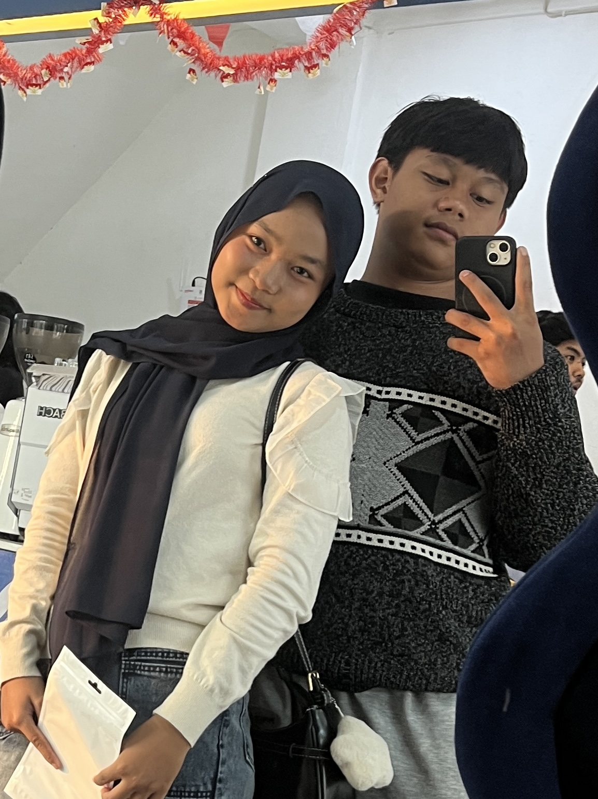
this one ♡
a moment
worth keeping.
nggak harus jadi foto paling sempurna. yang penting, foto ini pernah menyimpan satu momen yang berarti.
a little note for you
dear you, ♡
makasih udah jadi bagian dari banyak cerita kecil yang sekarang bisa aku simpan di sini.
mungkin website ini cuma kumpulan foto, tapi setiap foto punya cerita masing-masing.
semoga archive ini terus bertambah, bukan karena semuanya harus sempurna, tapi karena masih banyak momen sederhana yang bisa kita simpan.
there are still so many
memories to make.
our little archive is still growing...